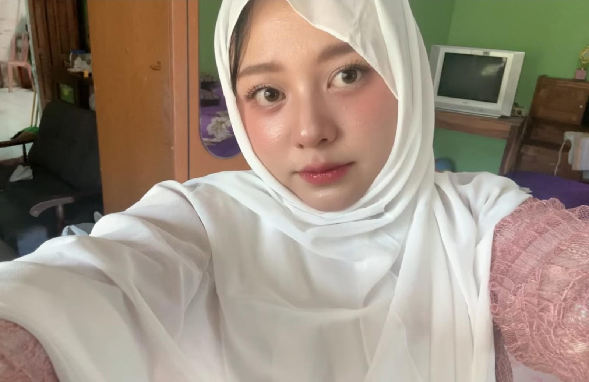
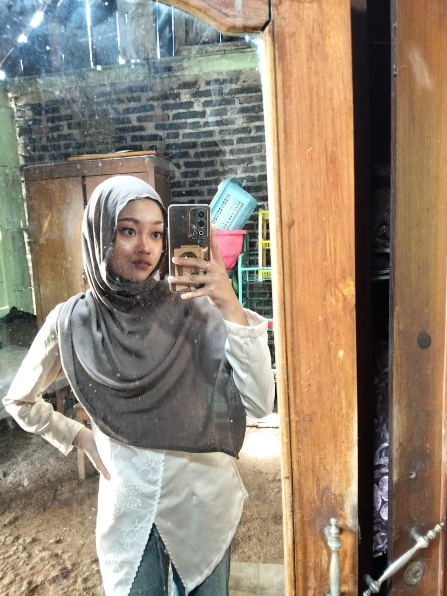
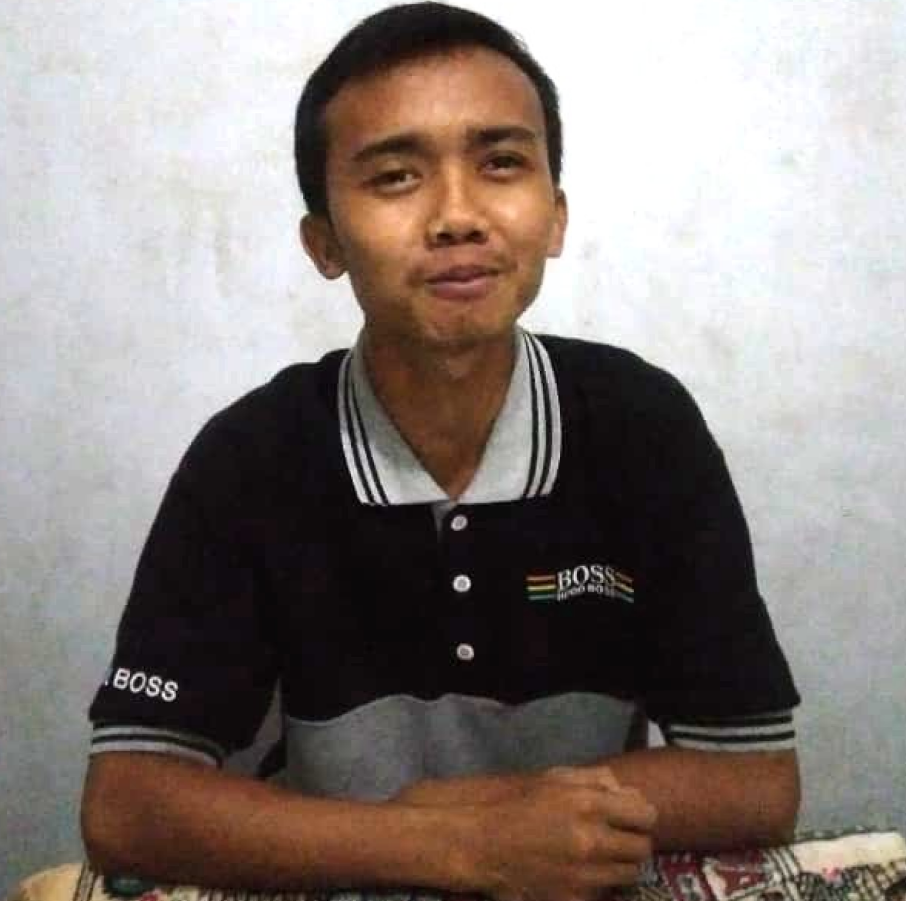
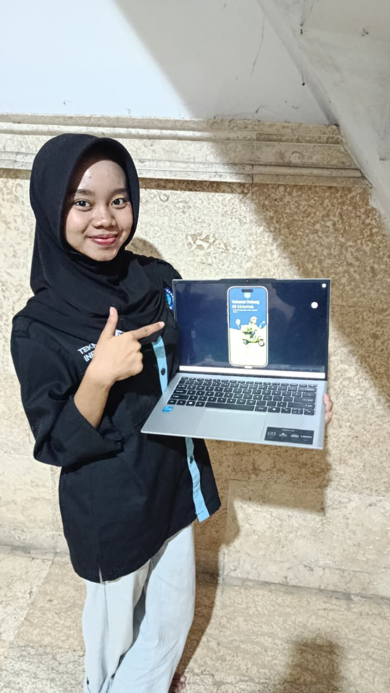
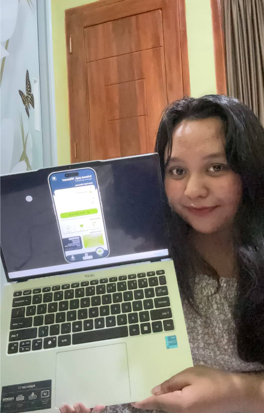
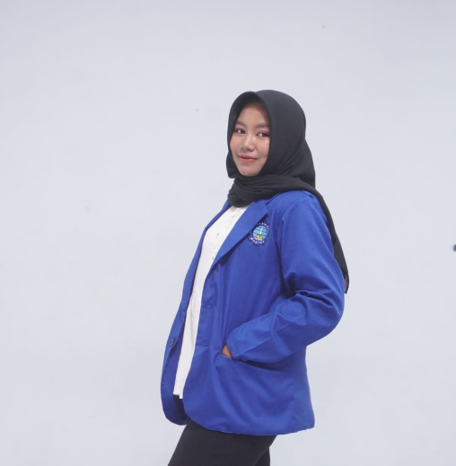

Solusi pengiriman barang lokal yang menghubungkan kebutuhan kiriman Anda dengan kecepatan dan kemudahan
Proyek ini lahir dari kebutuhan nyata pengguna yang frustrasi dengan aplikasi transportasi online yang ada — terlalu kompleks dan tidak intuitif. Melalui proses Design Thinking end-to-end, kami merancang solusi yang berfokus pada kecepatan dan kemudahan penggunaan.
Kami melakukan wawancara, observasi, dan kuesioner singkat kepada pengguna aktif untuk memahami kebutuhan dan frustrasi mereka.

👤Mahasiswi aktif yang memiliki mobilitas tinggi dalam kegiatan sehari-hari. Sering menggunakan layanan transportasi online untuk pergi ke kampus, memesan makanan, dan sesekali mengirim barang. Mengutamakan kemudahan, kepraktisan, dan harga yang sesuai.

👤Mahasiswa yang fokus pada produktivitas akademik dan memiliki jadwal yang padat. Mengandalkan aplikasi untuk memesan makanan dan kebutuhan harian agar dapat menghemat waktu dan tetap fokus pada aktivitas kampus.

👤Karyawan dengan mobilitas tinggi yang tinggal cukup jauh dari tempat kerja. Lebih sering menggunakan kendaraan pribadi, namun memanfaatkan aplikasi untuk pemesanan makanan dan pengiriman barang ketika sedang sibuk atau tidak bisa keluar rumah.
Wawancara: Dilakukan terhadap 3 orang pengguna aktif.
Observasi: Langsung mengamati penggunaan aplikasi existing.
Kuesioner Singkat: Memvalidasi masalah secara kuantitatif.
Kebutuhan Layanan Praktis: User memerlukan layanan pengiriman barang dan makanan yang praktis untuk mendukung efisiensi waktu serta tenaga.
Profesionalisme Driver: User ingin semua driver memiliki sikap profesional dan standar pelayanan yang ramah selama perjalanan.
Akurasi Navigasi: User memerlukan akurasi navigasi dan sistem komunikasi yang efektif dengan driver untuk menghindari hambatan di lapangan.
Kesesuaian Harga: User memerlukan kebijakan harga yang adil dan sesuai dengan kualitas layanan yang dijanjikan.
Berdasarkan hasil empathy, saya mendefinisikan masalah inti dan merumuskan peluang solusi yang dapat dieksekusi.
"Gojek hanya digunakan saat kondisi tidak memungkinkan untuk berkendara sendiri — pengguna membutuhkan aplikasi transportasi yang praktis, driver yang profesional dan komunikatif, navigasi yang akurat, serta harga yang transparan dan sesuai dengan layanan yang diberikan."
Sederhanakan alur pemesanan menjadi maksimal 3 langkah (Input alamat → pilih layanan → konfirmasi) untuk mengurangi friksi pengguna. — High Impact, High Effort
Sediakan estimasi waktu tiba real-time berdasarkan jarak dalam kota/kabupaten sejak sebelum konfirmasi pesanan, agar pengguna percaya dan yakin memesan. — High Impact, High Effort
Otomatis isi alamat pengirim berdasarkan lokasi pengguna saat ini agar pengguna bisa memesan kapan saja tanpa navigasi panjang. — High Impact, Low Effort
Sediakan indikator ketersediaan kurir secara real-time agar pengguna merasa aman memesan di luar jam sibuk. — High Impact, High Effort
Tahap eksplorasi ide solusi, mulai dari Crazy 8's brainstorming kasar hingga Low-Fidelity Sketches yang lebih terstruktur.
Prototipe high-fidelity dibangun di Figma mencakup perjalanan pengguna utama: Login/Register, Beranda, Pemesanan, Pembayaran, hingga Detail Pesanan.
Sistem desain yang konsisten mencakup Brand Color, Typography, Button, User Input, Tabs, PopUp, Icon, dan Logo — semua dibangun di Figma.
Prototype high-fidelity yang dapat langsung dicoba di bawah ini — rasakan alur pemesanan dari halaman utama hingga konfirmasi pesanan.
Saya berfokus pada masalah inti: memastikan kemudahan dan kenyamanan pemesanan.
Contoh Task:
"Anda ingin mengantar barang dengan segera, anda sadar tidak ada kendaraan di rumah,
temukan cara tercepat untuk memesan layanan tersebut."
Metode: Qualitative Testing
Teknik: Task-based testing + wawancara singkat
Jumlah Responden: 2 orang

| Task | Status | Catatan |
|---|---|---|
| Membuka App & Beranda | ✓ Berhasil | Mudah dipahami |
| Login / Register | ✓ Berhasil | Alur login lebih jelas setelah revisi |
| Input Lokasi | ✓ Berhasil | Alur jelas |
| Estimasi & Pesan | ✓ Berhasil | Harga jelas |
| Pembayaran (Payment) | ✓ Berhasil | Tombol payment berfungsi setelah prototype ulang |
| Pencarian Driver | ✓ Berhasil | Status dimengerti |
| Selesai Perjalanan | ✓ Berhasil | Konsisten |

| Task | Status | Catatan |
|---|---|---|
| Membuka App & Beranda | ✓ Berhasil | Tampilan menarik dan jelas |
| Login / Register | ✓ Berhasil | Mudah dipahami |
| Input Lokasi | ✓ Berhasil | Langsung dimengerti |
| Estimasi & Pesan | ✓ Berhasil | Informasi harga terlihat jelas |
| Pembayaran (Payment) | ✓ Berhasil | Alur pembayaran lancar |
| Pencarian Driver | ✓ Berhasil | Status mudah dimengerti |
| Selesai Perjalanan | ✓ Berhasil | Konsisten dan nyaman |
Prototype aplikasi "KirimYuk" berhasil diuji secara fungsional untuk kebutuhan dasar transportasi. Aplikasi mudah digunakan dan alurnya jelas. Jika berkenan, pengembangan UI selanjutnya akan berfokus pada penambahan fitur sekunder seperti notifikasi dan layanan non-transportasi untuk meningkatkan daya saing dengan super App yang ada.

🧑🎨